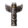

在游戏中，世界各地的各种原始宗教信仰均划归为原始宗教组。开局时，游戏中共有8种原始宗教：  泛灵论、
泛灵论、 拜物教、
拜物教、 腾格里、
腾格里、 因蒂崇拜、
因蒂崇拜、 玛雅宗教、
玛雅宗教、 纳瓦特尔宗教和
纳瓦特尔宗教和  梦创神话。它们分别分布在世界的不同地域，彼此间视为异端。
梦创神话。它们分别分布在世界的不同地域，彼此间视为异端。
除以上宗教外，游戏中还有  诺斯信仰，它可以在游玩自定义国家或随机新世界时出现；使用欧陆风云4转档器DLC对王国风云2进行转档时也可以出现诺斯信仰。在1.34版本后，拥有
诺斯信仰，它可以在游玩自定义国家或随机新世界时出现；使用欧陆风云4转档器DLC对王国风云2进行转档时也可以出现诺斯信仰。在1.34版本后，拥有 北方雄狮DLC时，可以通过特殊的事件链将国家信仰皈依为诺斯信仰。
北方雄狮DLC时，可以通过特殊的事件链将国家信仰皈依为诺斯信仰。
除  腾格里、
腾格里、 拜物教和
拜物教和  梦创神话之外，所有的原始宗教省份自带
梦创神话之外，所有的原始宗教省份自带  +2% 本地传教强度，因此它们更容易被其它信仰转化。大多数原始宗教国家都会在
+2% 本地传教强度，因此它们更容易被其它信仰转化。大多数原始宗教国家都会在  行政科技达到8级后会解锁一个决议，获得永久的
行政科技达到8级后会解锁一个决议，获得永久的  +2% 全局传教强度，这能让它们更快地向其他原始宗教异端传教。
+2% 全局传教强度，这能让它们更快地向其他原始宗教异端传教。
信仰除  腾格里外的任意原始宗教组宗教的国家，在不是
腾格里外的任意原始宗教组宗教的国家，在不是  部落政体时，如果拥有任意一个其它宗教组的省份，则可以通过决议将宗教转变至该宗教组，并在后续事件中选择皈依该宗教组中的一种教派，同时失去 4 稳定度。只能转变为该国家已拥有的省份中的教派。
部落政体时，如果拥有任意一个其它宗教组的省份，则可以通过决议将宗教转变至该宗教组，并在后续事件中选择皈依该宗教组中的一种教派，同时失去 4 稳定度。只能转变为该国家已拥有的省份中的教派。
泛灵论
在游戏中，泛灵论代表了世界上从南美洲到非洲及印度尼西亚的诸多信仰。
所有泛灵论的国家会受到如下效果：[1]
 +1 国教容忍
+1 国教容忍 −1 全国叛乱度
−1 全国叛乱度
所有泛灵论的省份会受到如下效果：
 +2% 当地传教力量[2]
+2% 当地传教力量[2]
泛灵论是游戏中少数没有特殊机制的宗教。
拜物教
在游戏中，非洲的大部分地区被归类为拜物教。
- 参见：拜物教事件
所有拜物教国家获得：[1]
 +2 异教容忍
+2 异教容忍 +1 外交声誉
+1 外交声誉
注：1.32版本更新后，拜物教省份不再拥有 +2% 本地传教力量的省份修正，因为历史上它们并不容易被转化为其他宗教。
+2% 本地传教力量的省份修正，因为历史上它们并不容易被转化为其他宗教。
崇拜物
|
|
只适用于DLC人权激活时。 |
当一个新的君主在拜物教国家登基时，可以选择一个崇拜物来为国家提供特殊的修正，直至君主去世。在游戏开局时，每个拜物教国家根据其地理位置，都有三个可用的崇拜物。新的崇拜物可以通过以下方式来解锁：
- 与其它宗教国家或解锁了某一当前尚未拥有的崇拜物的拜物教国家开战；
- 与其它宗教国家接壤并结盟；
- 与尊奉某一当前尚未拥有的崇拜物的拜物教国家接壤；
- 拥有某一其它宗教的省份。
可用的崇拜物及其修正效果如下表所示：[1]
{kind=link}
{kind=link}
{kind=link}
{kind=link}
{kind=link}
{kind=link}
{kind=link}
{kind=link}
{kind=link}
{kind=link}
{kind=link}
{kind=link}
{kind=link}
{kind=link}
{kind=link}
- 拜物教（马达加斯加） =
 萨卡拉瓦、
萨卡拉瓦、 梅里纳、
梅里纳、 贝齐米萨拉卡、
贝齐米萨拉卡、 马哈法利
马哈法利 - 拜物教（南部非洲） = 卢安果、
 刚果、 卢巴、 布哈、
刚果、 卢巴、 布哈、 穆塔帕、
穆塔帕、 马拉维、开普角地区等
马拉维、开普角地区等 - 拜物教（西部非洲） =
 莫西、 奥约、 贝宁、 卡诺、 扎造等
莫西、 奥约、 贝宁、 卡诺、 扎造等
拜物教国家有几种特殊的  教士阶层特权可以影响崇拜物的效果：
教士阶层特权可以影响崇拜物的效果：
- 特权“灵活崇拜”可以解锁一个决议，允许每20年更换一次崇拜物，需要花费 25 正统性。
- 特权“为继承人建造神殿”允许为继承人选择崇拜物，其给予的加成效果是一般情况下的二分之一。奖励效果持续到当前继承人继位或去世。
- 特权“接纳独一崇拜”可以使某一崇拜物成为国家的主流崇拜物。激活主流崇拜时，当前崇拜物给予的加成翻倍，但其它崇拜物不再可选，只有在 50 年后或者在新君主继位时可重新选择崇拜物。这一特权与以上两个特权均互斥。
- 在未到达50年前，也可通过决议“更改主流崇拜”更改崇拜物，但需失去 1 稳定度，并获得为期 50 年的负面修正“改变传统”。
| 只适用于DLC利维坦激活时。 |
对于部分限制特定宗教可用的伟大工程，拜物教国家在选择对应宗教崇拜物时，也能够适用该伟大工程的加成。
图腾崇拜
在游戏中，图腾崇拜是所有北美原住民的国家信仰，分布于北美大陆大部地区。
- 参见：图腾崇拜事件
所有图腾崇拜国家获得:[1]
- +1正统信仰容忍
- −1全国叛乱
所有图腾崇拜省份获得:
- +2% 本地传教力量[2]
| 只适用于DLC利维坦激活时。 |
所有图腾崇拜国家的统治者只能拥有1个统治者特质，并且这些特质并非通用的统治者特质，而是由独立文件[3]定义的独特的“先祖特质”。“先祖特质”永远都会给予正面的效果，但部分效果低于通用统治者特质，详见下表：
祖灵
| 只适用于DLC利维坦激活时。 |
图腾崇拜国家可以将其前任统治者（无论是死亡还是下台）的“先祖特质”加入到其收集的一系列图腾之中。这样就能让这些统治者唯一的特质成为该宗教的永久性修正。增加一个“先祖特质”将会消耗400  外交点数，该过程不可逆，且无法增加两个相同的特质，上限是10个槽位。
外交点数，该过程不可逆，且无法增加两个相同的特质，上限是10个槽位。
1.35版本前，即使后来皈依了其他宗教，该修正也依然存在。
注：祖灵收集只能使用“先祖特质”，但如果使用 自定义国家并手动为统治者添加特质，则此时的特质为通用统治者特质，此类特质也可添加到祖灵中，但图标不会正常显示，且重新进入游戏后消失。
自定义国家并手动为统治者添加特质，则此时的特质为通用统治者特质，此类特质也可添加到祖灵中，但图标不会正常显示，且重新进入游戏后消失。
在游戏过程中，也可通过控制台指令为统治者添加“先祖特质”。例如 add_trait just 添加的是通用特质的公正效果，而 add_trait ancestor_just 添加的则是“先祖特质”的公正效果。
腾格里
在游戏中这个宗教包括了西伯利亚和满洲的北亚国家所奉行的各具特色的萨满教。
- 参见：腾格里事件
所有腾格里国家会受到如下效果[1]（无兼容信仰时）：
相融信仰
|
|
只适用于DLC哥萨克激活时。 |
腾格里（长生天）在某种程度上是一种易于与其他宗教融合的信仰，可以通过宗教窗口选择一种相融信仰（常被称为“兼容宗教”、“副宗教”等）。一旦选定相融信仰，对应的加成立即启用；但是选择新的相融信仰会取代前一个相融信仰带来的加成。国土内或边境邻接的宗教都可以作为相融信仰来选择。改变相融信仰会花费 50 威望，且10年才能更换一次。
50 威望，且10年才能更换一次。
如果当前已经选择了一个相融信仰，将不能获得腾格里本身  +25% 骑兵比例 和 −20% 陆军花费 的加成，仅获得目前相融信仰带来的加成。
+25% 骑兵比例 和 −20% 陆军花费 的加成，仅获得目前相融信仰带来的加成。
在1444年开局时， 海西女真和 建州女真兼容  儒教；
儒教； 科尔沁、 撒里畏吾尔、
科尔沁、 撒里畏吾尔、 蒙古和 哈密兼容
蒙古和 哈密兼容  金刚乘佛教；其余长生天国家均没有兼容宗教。
金刚乘佛教；其余长生天国家均没有兼容宗教。
选择一个相融信仰，将会带来以下效果：
- 信仰腾格里和相融信仰的省份均适用正统信仰容忍，但仍不能在宗教为相融信仰的省份中转变文化
- 信仰腾格里或相融信仰的国家将会视该国为相同信仰的国家（相同的宗教 +25）
- 信仰原始宗教或相融信仰所在宗教组（如果兼容宗教不是原始信仰）的国家将会视该国为异端信仰的国家(异端信仰 -20，邻国为-40)
- 既不信仰原始宗教、也不信仰相融信仰所在宗教组的国家将会视该国为不同信仰国家（不同的宗教 −10）
| 只适用于DLC利维坦激活时。 |
对于部分限制特定宗教可用的伟大工程，腾格里国家在选择对应宗教为相融信仰时，也能够适用该伟大工程的加成。
游戏中所有的其它宗教都可以作为腾格里的相融信仰，它们的效果如下：[1]
基督教宗教组
 −10% 理念花费
−10% 理念花费
- −1 全国叛乱度
 −10% 顾问花费
−10% 顾问花费
 +10 全局殖民地人口增长
+10 全局殖民地人口增长- +1 正统信仰容忍
穆斯林宗教组
东方宗教组
 +10% 税收修正
+10% 税收修正- +2 异教容忍
- −1 全国叛乱度
 +5% 训练度
+5% 训练度
印度宗教组
 +1 异端容忍
+1 异端容忍- +2 异教容忍
- −1 全国叛乱度
 +5% 陆军士气
+5% 陆军士气
原始宗教组
- +1 国教容忍
 −0.05 月度自治度变化
−0.05 月度自治度变化
{kind=link}
犹太教宗教组
祆教宗教组
 +1 商人团
+1 商人团- +1 正统信仰容忍
中美洲及南美洲信仰
| 只适用于DLC黄金国激活时。 |
（缺少DLC时仍然存在下属宗教，但没有独有的机制）
玛雅、因蒂和纳瓦特尔宗教都有一个机制来实现五次宗教改革。当最后一次改革完成且这个国家与一个接受了 封建制度的国家（包括殖民地国家）的核心省份相邻时，将可以徹底改革宗教，提高科技等级（每一种最高达到邻国科技等级的80%）并获得宗教改革的永久加成。徹底改革宗教将立即给予相邻省份所拥有的全部  思潮，並採用鄰國的政府類型，成爲
思潮，並採用鄰國的政府類型，成爲 公國級政府。
公國級政府。
徹底改革宗教將使國家擺脫「原始國家」的標籤。但會失去宣戰理由「瑪雅聯邦」和「榮冠戰爭」。
不论原本的宗教如何，中南美洲信仰的宗教狂徒都不会令一个国家转变宗教。這意味著皈依中南美洲信仰的唯一途徑是和平條款中的「強迫改變宗教」。
在徹底改革宗教之前，中南美洲信仰國家不能使用附屬國互動「強制改變宗教」。一國以任何方式皈依中南美洲信仰將使該國獲得「原始國家」標籤，並將該國設置爲未完成任何改革的狀態。
因蒂崇拜
在游戏中绝大多数安第斯山脉地区的国家开局信仰因蒂宗教。
- 参见：因蒂事件
因蒂崇拜的核心在于令民众将萨帕·印卡(意为君主)奉为神明以保持其权威。因蒂崇拜的国家的权威值取决于其领土大小及各个省份的自治度。领土越大其权威值越高，自治度上升则下降,无论是主动还是被迫。权威值范围为0至100。权威值同时还受一些专属事件的影响。
所有因蒂崇拜的国家获得：[1]
- +1 正统信仰容忍
- −0.05 月度自治度变化
所有因蒂崇拜的省份获得：
- +2% 本地传教力量[2]
每点权威值提供：[4]
| −0.1% | 稳定度花费修正 | |
| −0.02 | 全国叛乱 | |
| +0.15% | 教士影响力 |
权威值将因以下情况发生变动：
- 年度权威值：+0.02 * 总发展度
- 来自自治度的权威值：−0.2 或 +0.2 每上升或下降1点自治度
标准情况下，对一个省份实施一次提升自治度行动，将会使其自治度提高25，并获得 −5 权威值，反之则使得自治度降低25，并获得 +5 权威值。
如果一个因蒂崇拜国家拥有100点权威，处于和平，拥有正  稳定度，没有叛军控制的省份，并拥有至少10个
稳定度，没有叛军控制的省份，并拥有至少10个  省份，就可以推行一项宗教改革。但这样做将会使权威值清零并开启一场内战，可以看作是那些在改革中失势的人试图夺回自己权力。总之，改革者如果在改革道路上走得太远，就会面临着挑战。如果叛军获胜，就会失去至多两项宗教改革效果，让国家在改革宗教的道路上大大后退。
省份，就可以推行一项宗教改革。但这样做将会使权威值清零并开启一场内战，可以看作是那些在改革中失势的人试图夺回自己权力。总之，改革者如果在改革道路上走得太远，就会面临着挑战。如果叛军获胜，就会失去至多两项宗教改革效果，让国家在改革宗教的道路上大大后退。
在推行宗教改革后，由于权威值清零，其带来的增益(降低稳定花费及减少全国叛乱)也会随之而去，所以改革前权威值的多寡不必影响推行改革的决策。但下表中的宗教改革增益仍将持续到本局游戏结束。
可行的改革包括：
- 有组织的征募： +10% 人力恢复速度
- 雅拿领主： +10% 陆军士气
- 改革因蒂崇拜： +0.5 年度正统性、
 +0.5 年度奉献度
+0.5 年度奉献度 - 扩张密特马政策：
 +1 殖民队 (与殖民地相邻的省份将会被自动探索)
+1 殖民队 (与殖民地相邻的省份将会被自动探索) - 改革官僚体系：
 −10% 造核花费
−10% 造核花费
当国家推行了最后一项改革，同时与一个已经接受了 封建制度思潮的国家接壤时，就可以对宗教进行彻底改革，获得相当于接壤国家80%的科技等级、免费接受其已经接受的思潮，并永久获得宗教改革增益。
值得注意的是因为完成教改前无法接纳思潮，导致拥有极高的科技惩罚，玩家的君主点数上限将会远远超过默认的最高999。当玩家接纳一过完成教改时，会因为瞬间接纳全部思潮而造成三项君主点数上限降低至999。虽然超出上限的君主点数不会立即消失，但君主点数的首次变动即会使上限降低至999，操作失误会使玩家瞬间丢失大量的君主点数。经测试，通过点数提升发展度是可以种出并接纳思潮的（尽管点数消耗很高），而且超出上限的君主点数亦不会瞬间变为999，故删除此段。
玛雅宗教
在游戏中，尤卡坦半岛以及曾属于玛雅潘联盟的国家信仰着玛雅宗教。
- 参见：玛雅宗教事件
一个玛雅信仰国家想要推行改革，必须处于和平，没有叛军控制的省份，没有  过度扩张，具有正
过度扩张，具有正  稳定度，并拥有至少20个
稳定度，并拥有至少20个  省份。
省份。
所有信仰玛雅宗教的国家获得：[1]
所有信仰玛雅宗教的省份获得：
- +2%本地传教力量[2]
在推行一项改革时，玛雅信仰国家将会失去若干省份的核心并释放所有附庸。部分失去核心的省份可能被释放为独立国家或被给予其它国家，剩余省份继续由玩家控制并重新造核。改革后剩余的核心省份数量为10+2*已推行的改革数量。被释放的省份将由其文化、宗教和与首都的距离决定，与是否直辖无关，这个结果是固定的，并不因读档而产生变化，未被释放的省份似乎在下一次改革中也不会失去控制。 [存疑]。因失去核心而被释放的国家将签订停战协定，被释放的附庸国则无停战协定。注：
- 由于改革后剩余
 省份数量可能一直不少于20，此时玩家可以通过反复造核并主动提高
省份数量可能一直不少于20，此时玩家可以通过反复造核并主动提高  稳定度来快速完成全部五改。
稳定度来快速完成全部五改。
当国家推行了最后一项改革，同时与一个已经接受了封建制度思潮的国家接壤时，就可以对宗教进行彻底改革，获得若干科技等级，并永久获得宗教改革增益。 可行的改革包括：
- 一个统一的军队： −10% 陆军维护费用修正
- 中央仲裁： −2 全国叛乱
- 中央军械库：
 +10% 步兵作战能力
+10% 步兵作战能力 - 部落扩张： +1 殖民队 (与殖民地相邻的省份将会自动探索)
- 改革官僚体系： −20% 造核花费
纳瓦特尔宗教
在游戏中绝大多数现代墨西哥中部地区的国家以纳瓦特尔宗教开局。
- 参见：纳瓦特尔神话事件
纳瓦特尔宗教的国家均拥有一个末日计数，每年都会随着省份数目的多寡而增长。高末日值会增加科技和理念的花费，当其到达100点时，国家必须采取非常手段避免末日降临：当前君主和其储君将被血祭，并由一个0/0/0的新君上位。所有君主点数将清零，国家陷入内乱，所有附属国都会宣布独立，并会失去至多2项宗教改革。
所有纳瓦特尔宗教国家获得：[1]
- −2 全国叛乱
- +10% 陆军士气
所有纳瓦特尔宗教省份获得：
- +2% 本地传教力量[2]
每一点末日值给予:[5]
| +0.5% | 科研花費 | |
| +0.2% | 理念花費 | |
| −1.0% | 侵略扩张影响 |
为了避免末日降临，纳瓦特尔宗教国家面临数个选择以降低末日值：“荣冠战争”的宣战理由可以使纳瓦特尔宗教国家之间随意宣战，此理由下的征服领土和战役胜利（将战俘献给诸神）将减少末日值。如果这还不够的话，纳瓦特尔宗教国家也可以血祭其附属国的君主和储君，这会使末日值减少祭品君主能力之和，但会激怒所有附属国，使他们更倾向于独立。在血祭另一个国家君主/继承人之前有3年的冷却时间。纳瓦特尔宗教国家可以在摄政期间发动战争。
末日值按照如下的方式增减：
- 年度末日值增长：+1每拥有一个省份
- 末日值减少：−20% 每通过一项改革
- 通过占领省份减少末日值：−0.05每点省份发展度
- 通过战斗减少末日值：−1 每杀死1000人
- 通过献祭减少末日值：−1 被献祭角色的每一技能点
- 献祭附属国的君主将会提高其
 独立倾向 +25
独立倾向 +25 - 献祭附属国的继承人将会提高其 独立倾向 +20
- 献祭附属国的君主将会提高其
附属国则不会增长末日值。
为了使得国家从献祭和战争的恶性循环中解脱出来，就必须对宗教进行改革。要推行改革，国家必须拥有至少5个附庸国，没有叛军控制的省份，具有 正稳定，且末日值低于50。推行一项改革会使得末日值增加25，
正稳定，且末日值低于50。推行一项改革会使得末日值增加25， 稳定度下降1，所有的附属国都会独立(这将产生一份单方面、为期5年的和约，但是已经存在的和约不会额外延长)，迫使国家使用战争手段让它们重归麾下。此外，每一项改革都会使得国家的末日值的基础增加值降低20%。推行全部5项改革将会使得末日值不再按年度增长，但其仍有可能在特殊事件发生后上升。
稳定度下降1，所有的附属国都会独立(这将产生一份单方面、为期5年的和约，但是已经存在的和约不会额外延长)，迫使国家使用战争手段让它们重归麾下。此外，每一项改革都会使得国家的末日值的基础增加值降低20%。推行全部5项改革将会使得末日值不再按年度增长，但其仍有可能在特殊事件发生后上升。
以下是全部可用的宗教改革：
- 放开奢饰品的限制：
 −0.05 月度厌战度
−0.05 月度厌战度 - 扩展波其德卡义务：
 +1 外交关系
+1 外交关系 - 士兵等级： +5% 训练度
- 部落扩张： +1 殖民者（将自动探索殖民省份周围的省份）
- 法律改革： −20% 稳定度花费修正
当国家推行了最后一项改革，同时与一个已经接受了 封建制度思潮的国家接壤时，就可以对宗教进行彻底改革，获得相当于接壤国家80%的科技等级和政体，并永久除去末日值机制。
梦创神话
- 参见：梦创神话事件
梦创神话是澳大利亚原住民的本土信仰。开局时，澳大利亚的所有省份和国家的宗教信仰均为梦创神话。
所有梦创神话国家获得[1]：
崇拜物
|
|
只适用于DLC人权激活时。 |
与拜物教的机制相似，梦创神话国家可以在每次新君主上台时选择一个新的崇拜物（传说故事)。各个崇拜物带有独特的修正和事件，直到君主变更。全部梦创国家在游戏开始时均有三个可用的崇拜物：先祖、埃拉提帕和鸦神； 帕拉瓦开局还有莫伊尼和阿德诺阿尔提纳。所有其它崇拜物需要完成梦创神话任务中专属的不同任务，或者通过接壤其他宗教的国家来解锁。
帕拉瓦开局还有莫伊尼和阿德诺阿尔提纳。所有其它崇拜物需要完成梦创神话任务中专属的不同任务，或者通过接壤其他宗教的国家来解锁。
可用的崇拜物及其修正效果如下表所示[6]：
诺斯信仰
时至1444年，诺斯信仰早已经消失，不存在于任何省份或国家中。
- 参见：诺斯信仰事件
任何开局中都没有诺斯信仰的省份和国家，但如果“幻想”元素启用，诺斯信仰的国家可以出现在随机新世界中。启用自定义国家时，可将自定义国家宗教设置为诺斯信仰。使用Europa Universalis 4 Save Converter将十字军之王2的存档转换为欧陆风云4的存档时仍存在的诺斯信仰也将被保留。
拥有  北方雄狮DLC时，可以通过特殊的事件链将国家信仰皈依为诺斯信仰，并启用特殊的诺斯信仰决议和事件。
北方雄狮DLC时，可以通过特殊的事件链将国家信仰皈依为诺斯信仰，并启用特殊的诺斯信仰决议和事件。
所有诺斯信仰国家获得：[1]
所有诺斯信仰省份获得：
- +2% 当地传教力量[2]
皈依诺斯信仰
| 只适用于DLC北方雄狮激活时。 |
- 主条目：诺斯信仰事件
仅当 DLC 北方雄狮开启时，可以在不启用随机新大陆或自定义国家时，在游戏中将宗教转为诺斯信仰。
满足文化、君主、省份等方面的特定条件时，可以开启一个事件链，允许最终将国教转为诺斯信仰。此处仅列出该事件链的第一个事件。
 求知浪潮
求知浪潮
|
|
这条信息可能已不适合当前版本，最后更新于1.35。 |
斯堪的纳维亚在中世纪盛期接纳了基督教信仰。尽管并非没有犹豫，但丹麦、瑞典和挪威最终皈依了基督教，遵从于圣座。他们被许诺得到赦免。
北欧人并未设想到所谓赦免竟是这种模样：寻常的神甫也可以向人贩售免于地狱之火烧蚀的赎罪券，主教蚕食着自己曾许诺保护的城市的财富，而教宗比起天主教的命运显然更关心自己的所得。
当此时节，无怪乎[Root.Monarch.GetName]作为[Root.Monarch.GetTitle]开始质疑教廷的权威。在一次乘马路过[Root.GetName]荒郊时，[Root.Monarch.GetSheHe]偶然见到了我们信奉原始宗教的先祖遗留下来的卢恩字母刻石。[Root.Monarch.GetSheHe]对旧时神明的好奇逐渐萌发……
| 触发条件
DLC
|
平均发生时间
100 年
|
教会注定失败，让我们重拾古老的诺斯信仰吧！ 统治者获得修正 “淡出公众生活” 持续
愚蠢的行为！ 该国：
| |
除此之外，斯堪的纳维亚地区的  泛灵论叛军在满足特定条件时可转化为诺斯信仰叛军，并将对应目标省份转化为诺斯信仰。
泛灵论叛军在满足特定条件时可转化为诺斯信仰叛军，并将对应目标省份转化为诺斯信仰。
诺斯理念与文化
| 诺斯的理念 |
此信息可能已落后版本，最后更新于1.35 ----注释
|
| +15% 陆军士气 可以劫掠海岸（包括相同宗教国家） |
| +15% 步兵作战能力
|
|
{kind=link}
{kind=link}
{kind=link}
满足特定条件时，诺斯信仰国家可以触发如下事件，并选择将国家理念切换为 诺斯理念；国家的
诺斯理念；国家的  主流文化将转变诺斯文化（北欧文化组）；所有拥有的瑞典、丹麦、挪威或冰岛文化省份也将转变为诺斯文化。
主流文化将转变诺斯文化（北欧文化组）；所有拥有的瑞典、丹麦、挪威或冰岛文化省份也将转变为诺斯文化。
诺斯文化复兴
|
|
这条信息可能已不适合当前版本，最后更新于1.35。 |
随着诺斯信仰的复兴，[Root.GetName]的大众开始践行早已失落的传统和仪式。古诺斯文化的重生或许是我们国家打破基督教束缚我们文化的枷锁的机会。
| 触发条件
DLC
|
平均发生时间
20 月 |
立即生效
| |
是时候回归我们的文化根基！ 该国
该国的首都：
所有拥有的瑞典、丹麦、挪威或冰岛文化省份：
潜在效果：
我们不能放弃数百年来取得的进步。 若该国的稳定度小于 +3
| |
主神
|
|
只适用于DLC国富论激活时。 |
诺斯信仰君主可以在宗教界面中选择主神，持续至君主去世或者特殊事件发生。诺斯信仰共和国在选举出新的领袖时（视共和国政体不同，通常在4-8年时）选择一次新的主神，这类国家可以更快的根据所需来调整君主信仰的守护神。
| 只适用于DLC北方雄狮激活时。 |
可以通过决议“变更个人神祇”改变所敬奉的神祇，该决议每 20 年可通过一次，需要花费 -25  正统性（或其它政体的同类数值）。
正统性（或其它政体的同类数值）。
每个神祗都能为信仰其的国家提供2个奖励：
{kind=link}
{kind=link}
{kind=link}
{kind=link}
{kind=link}
{kind=link}
参考资料
- ↑ 1.00 1.01 1.02 1.03 1.04 1.05 1.06 1.07 1.08 1.09 1.10 请见 /Europa Universalis IV/common/religions/00_religion.txt。
- ↑ 2.0 2.1 2.2 2.3 2.4 2.5 这意味着信仰大部分原始宗教的省份会更容易转化信仰。
- ↑ 文件位于： /Europa Universalis IV/common/ancestor_personalities/00_core.txt
- ↑ 参见 /Europa Universalis IV/common/static_modifiers/00_static_modifiers.txt (Static modifiers#Authority)。
- ↑ 请见 /Europa Universalis IV/common/static_modifiers/00_static_modifiers.txt (Static modifiers#Doom)。
- ↑ 请见/Europa Universalis IV/common/fetishist_cults/00_dreaming_stories.txt
- ↑ 此事件选项仅在该国在事件出现后转换为原始宗教信仰后重新加载游戏时才可用。
- ↑ 需要在事件“诺斯文化复兴”中选择特定选项